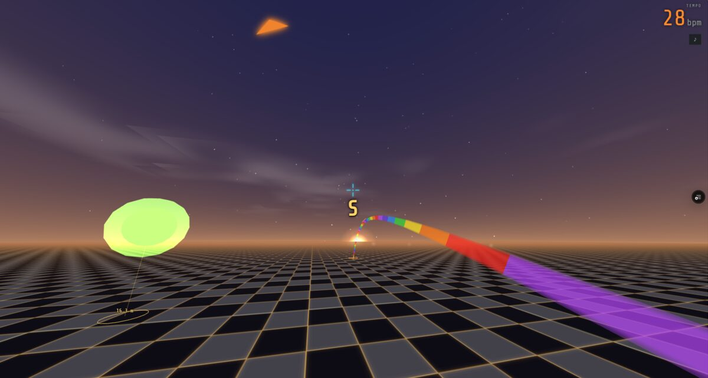

One month in Japan — three Tokyo nights at each end, the middle in Kyushu visiting family in Saga (Kanzaki & Kashima) and a Kumamoto base for mountain day-trips.
Tap any day to see the plan and leave a note. Everyone's notes show up here.
* = suggested day-trip from the Kumamoto base — not booked, weather-dependent (Aug is typhoon season; Miyazaki most exposed).
General messages that aren't about one day — say hi, plan a meet-up, share a photo link.
| Date | Flight | Route | Class |
|---|---|---|---|
| Mon 27 Jul | JL007 |
Boston (Logan, Term. E) 13:15 → Tokyo Narita (T2) 16:00 (+1, 28 Jul) | Economy (O) 13h45 |
| Fri 28 Aug | JL008 |
Tokyo Narita (T2) 18:25 → Boston (Logan, Term. E) 18:15 (same day) | Economy (Q) 12h50 |
Booked under COLSON ROBERT JOHN. Arrive 9h Narita the evening of 27 Aug; capsule checkout 10:00 on the 28th (no late checkout). Depart sequence: checkout → store bags → eat → check-in → security → 18:25.
Dates = nights you sleep there; check-out is the next morning.
| Nights | Nt | Property / address | Phone | Price / cancel |
|---|---|---|---|---|
| 28–30 Jul | 3 | do-c Ebisu 1-8-1 Ebisu, Shibuya-ku, Tokyo | +81 50-1807-2324 | advance-pay |
| 31 Jul | 1 | 9h nine hours Hakata 3-22-2 Hakataekimae, Hakata-ku, Fukuoka (Hakata Stn) | +81 50-1807-3481 | Fri rate (low) |
| 1–7 Aug | 7 | R9 The Yard Kanzaki 4155-54 Osaki, Kanzaki-machi, Kanzaki, Saga | +81 952-20-3642 | ¥53,910 free to 29 Jul (then ¥11,700) |
| 8–14 Aug | 7 | R9 The Yard Sagakashima Nakamura 821-2, Kashima, Saga | +81 954-69-0111 | Genius −10% free to 5 Aug (then ¥10,800) |
| 15–22 Aug | 8 | Obi house B2 Obiyama 1-24-24, Kumamoto City host meets 15:00–18:00 | +81 80-3981-4337 | ⚠ rebook to check-out 23 Aug free to 13 Aug |
| 23 Aug | 1 | 9h nine hours Hakata (return car) 3-22-2 Hakataekimae, Hakata-ku, Fukuoka (Hakata Stn) | +81 50-1807-3481 | ¥3,630 prepaid ✓ |
| 24–26 Aug | 3 | do-c Ebisu 1-8-1 Ebisu, Shibuya-ku, Tokyo | +81 50-1807-2324 | advance-pay ⚠ extend to 3 nt |
| 27 Aug | 1 | 9h nine hours Narita Narita T2 (landside) | — | ¥7,266 free to 26 Aug |
Cancellation cliffs: R9 Kanzaki free to 29 Jul (then ¥11,700) · R9 Kashima free to 5 Aug (then ¥10,800) · Obi Kumamoto free to 13 Aug · 9h Narita free to 26 Aug. do-c / 9h Hakata = advance-pay — check before changing.
| Floor | Department | Errand |
|---|---|---|
| 1F | Mobile phones & SIMs | au / KDDI second SIM (prepaid visitor line) |
| 2F | Travel goods | Duffel / carry-cart for haul-home shopping |
| 6F | Bicycles & accessories | Lock / lights / helmet if rental doesn't include |
| 8F | Restaurants | Lunch |
Tax-free: bring passport to the register. Parking B2–B6. Peace cigarettes not sold here — buy at a konbini or tobacco shop (たばこ).
Key art · The Moon's Lost Chorus
Moon Chorus (still at aim-dojo.vercel.app) — a browser rhythm-aim game Bobby built. Long before dinosaurs, the Moon kept a choir of distant minds. Their voices fell asleep inside glowing Echo Orbs. You are the Listener: step when the floor flashes, send a rainbow link through the gap, and land it while the orb glows so a lost voice can rejoin the chorus. Miss the glow and you only clink a closed shell. Nothing to install.

In the browser · same rules, live on the web
Best on a computer with a mouse. Headphones help — the Echoes call from where they're hiding. New players can pick the trainer; veterans jump straight into the Full Night.